Cakes & Custom CakesPasteles y Pasteles a la Medida
Hand-decorated cakes for birthdays, graduations, and every celebration.Pasteles decorados a mano para cumpleaños, graduaciones y toda celebración.
Authentic Mexican breads, cakes, cookies, and pastries — handmade daily in Kent, WA. Pan mexicano auténtico, pasteles, galletas y pan dulce — hecho a mano todos los días en Kent, WA.
From crusty artisan loaves to celebration cakes, every item is crafted in-house with care. Desde pan artesanal hasta pasteles de celebración, todo se elabora en casa con cariño.
Hand-decorated cakes for birthdays, graduations, and every celebration.Pasteles decorados a mano para cumpleaños, graduaciones y toda celebración.
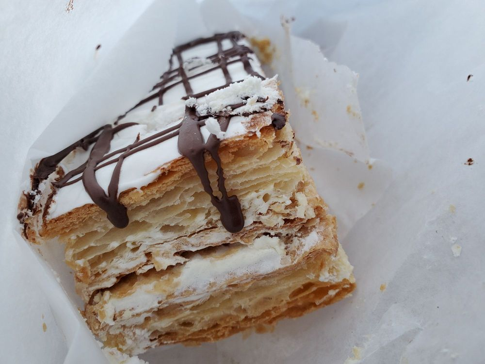
Buttery, flaky, golden — layered cake, churros, and croissants straight from the oven.Mantecoso y hojaldrado — pastel en capas, churros y cuernitos recién salidos del horno.

Soft, fluffy, classic — the kind of concha you remember from home.Suaves, esponjosas, clásicas — las conchas que recuerdas de casa.

Creamy caramel custard — made the way abuela taught us.Cremoso flan de caramelo — hecho como nos enseñó la abuela.
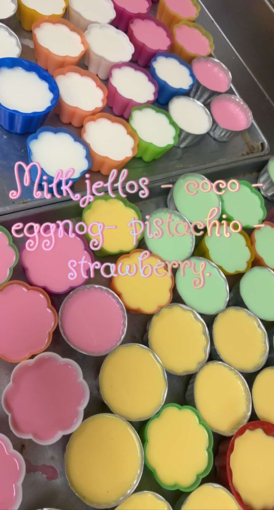
Milk gelatins in a variety of shapes and flavors.Gelatinas de leche en variedad de formas y sabores.
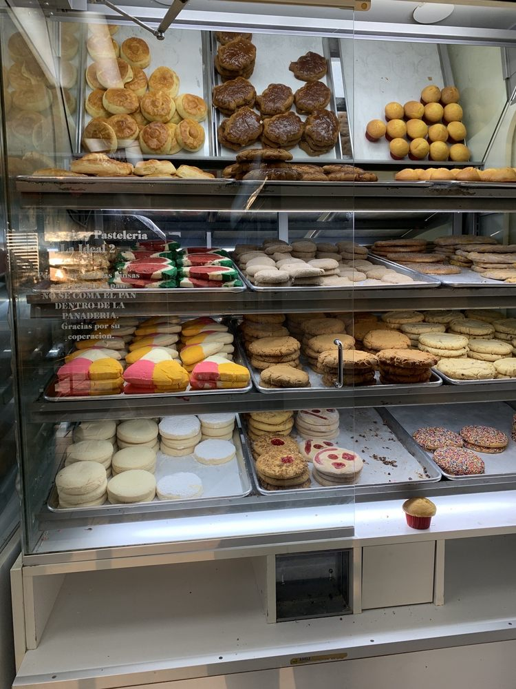
A wide assortment of fresh-baked cookies, every day.Gran variedad de galletas recién horneadas, todos los días.
Time-honored recipes crafted with skill and authenticity.Recetas de toda la vida elaboradas con maestría y autenticidad.
Proudly serving Kent families and celebrations for years.Sirviendo con orgullo a las familias de Kent por años.
Every loaf and dessert reflects attention to detail.Cada pan y postre refleja atención al detalle.

At Pasteleria Y Panaderia La Ideal 2, baking isn't just a craft — it's a family tradition. Every recipe carries the warmth of home kitchens and the love of feeding the people you care about. En Pastelería y Panadería La Ideal 2, hornear no es solo un oficio — es una tradición familiar. Cada receta lleva el calor de la cocina de casa y el amor de alimentar a los tuyos.
We knead, shape, and bake everything by hand. Walk in and you'll smell it before you see it — fresh bread, melted butter, and a little bit of childhood. Amasamos, formamos y horneamos todo a mano. Al entrar lo olerás antes de verlo — pan recién hecho, mantequilla derretida y un toque de infancia.
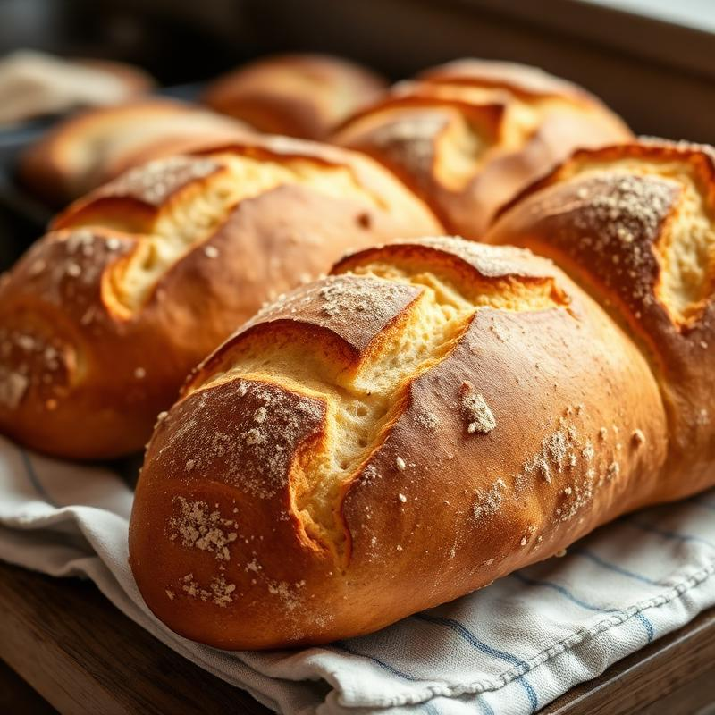
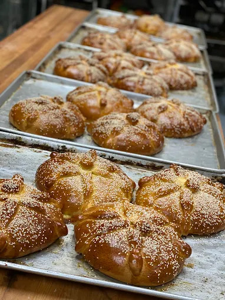
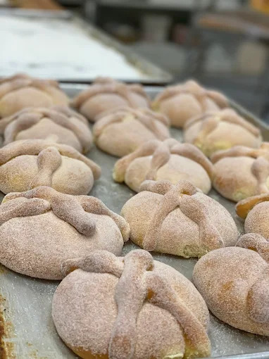
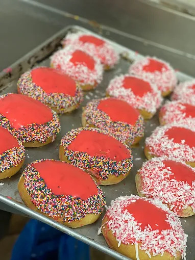
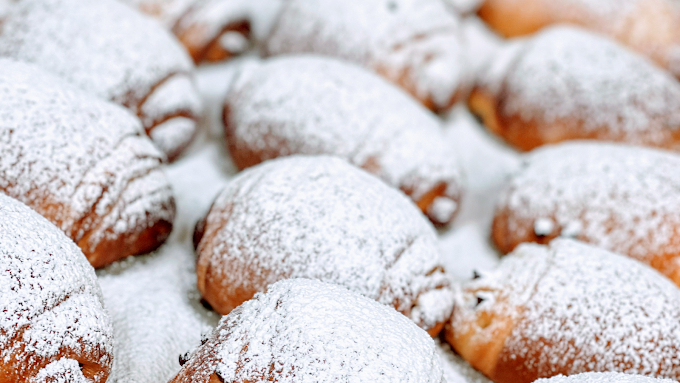
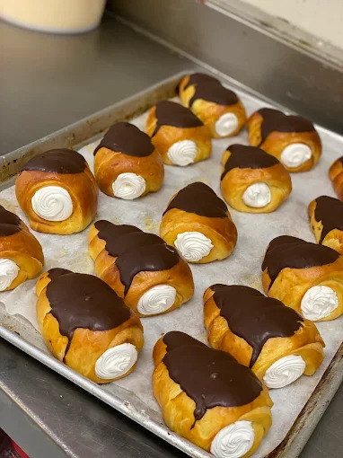
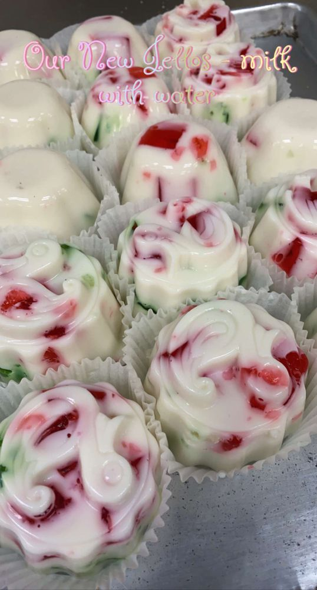
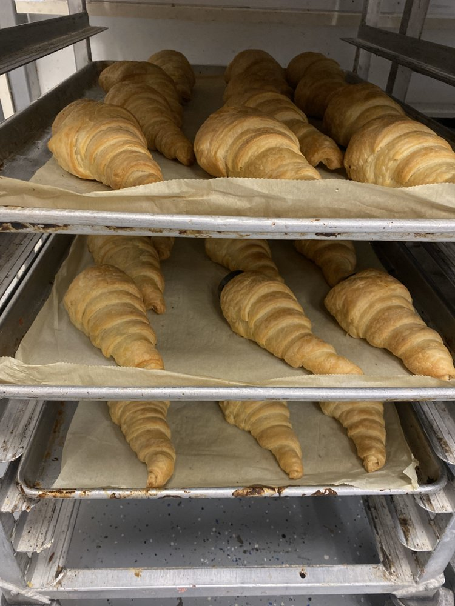
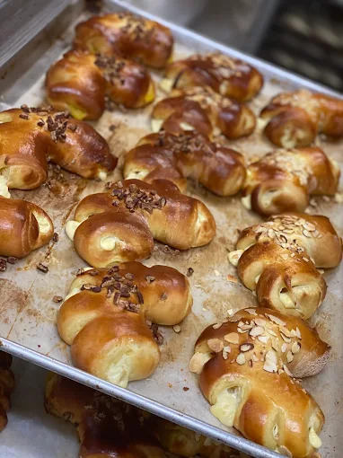
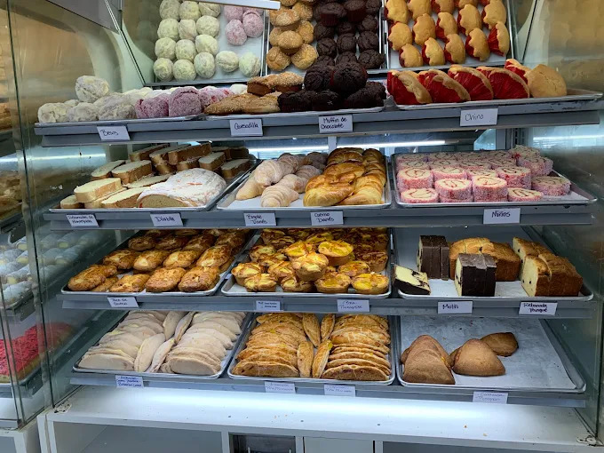
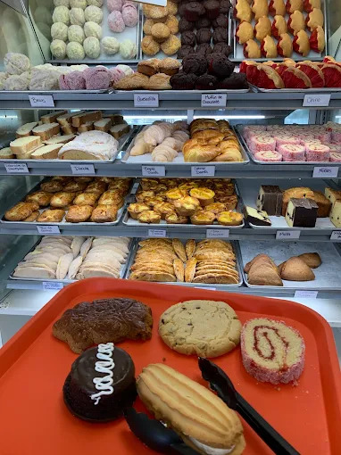
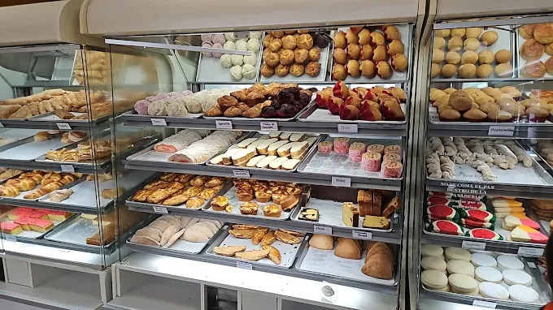
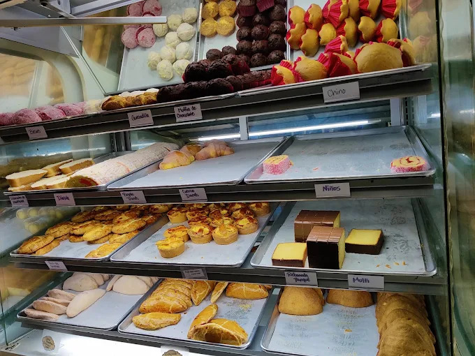
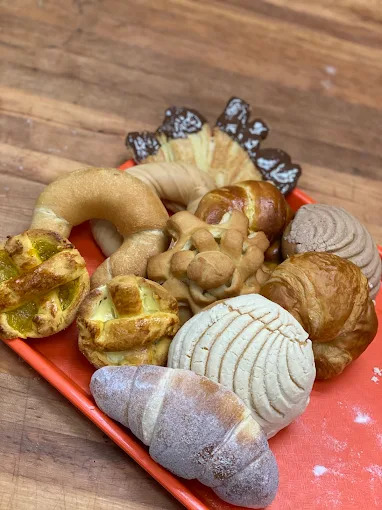
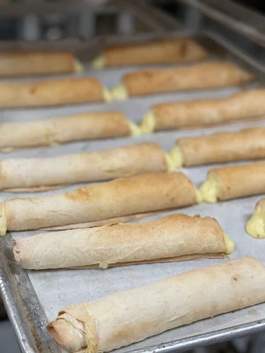
"Bread is ALWAYS fresh and the options are endless! I have to limit myself because I want one of everything. Service is quick and they make sure your fresh bread doesn't get squished." "¡El pan SIEMPRE está fresco y las opciones son infinitas! Me tengo que limitar porque quiero uno de cada uno. El servicio es rápido y se aseguran de que tu pan llegue perfecto."
"I've tried many Mexican bread shops and this one NEVER disappoints. The conchas are always soft and the bolillos are basically homemade white bread. 1000/10." "He probado muchas panaderías mexicanas y esta NUNCA decepciona. Las conchas siempre están suaves y los bolillos son como pan blanco casero. 1000/10."
"Their bread is fresh and delicious. Cashiers are welcoming and quick. Best pan dulce and bolillos south of Seattle." "Su pan es fresco y delicioso. Las cajeras son amables y rápidas. El mejor pan dulce y bolillos al sur de Seattle."
We'd love to bake for you — stop in or give us a call. Nos encantaría hornear para ti — pásate o llámanos.
26112 Pacific Hwy S
Kent, WA 98032
Open Daily At 8 AM · Closes 9 PMAbierto Todos los Días 8 AM · Cierra 9 PM
(206) 651-7514